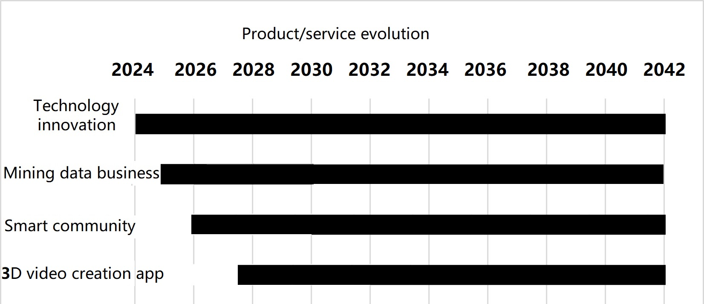
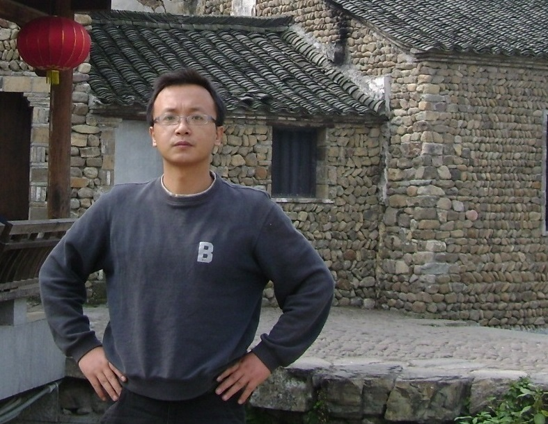
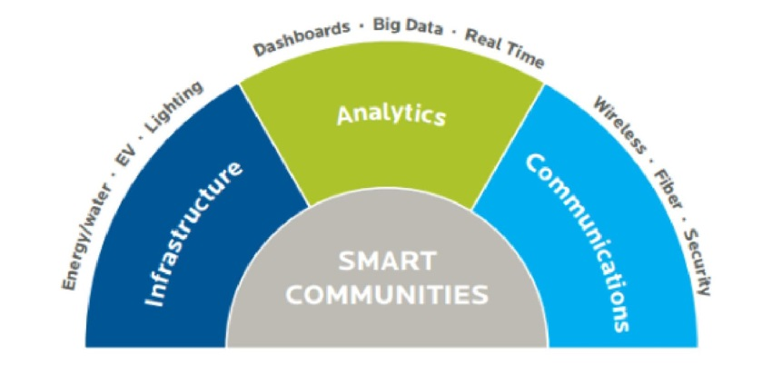
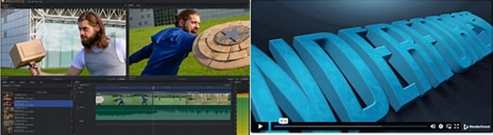

Introduction
Westlake science & technology private limited was established in 2024 in Vancouver, British Columbia, Canada. The two founders of the company were teachers from Zhejiang University of Finance and Economics and China Jiliang University. Combining the results of their respective specialties, with an eye on future technologies, the environment, and the needs of society. The company has drawn up a long-term development plan. Starting from data processing business and innovation platform development that the company obtains income from scientific research, we gradually accumulate the company's intellectual property rights and prospect technology. After peer review, the company's business will be divided into 7 stages, the first stage of technology accumulation, the second stage for equipment installation, the third stage for GIS information services, the fourth stage for GIS oil and mining data business, the fifth stage is smart community, the sixth stage is three dimension innovation video creation system. Below is the company's product evolution route.
Founders
Dr Yan Kang(CEO), founder of WLST , who obtained bachelor, master, and doctorate in remote sensing and GIS field in the most prestige institute of her country, also has great talent in programming. She continue practicing in Big data industry, presided several projects supported by local government and enterprises, published about 20 papers, was granted 10 patents as of now.

Dr Wang Jun: Co-Founder of the company, whose bachelor's degree, master's degree had been granted in Wuhan University, Ph.D. in Huazhong University of Science and Technology, worked in Shenyang Mining Machinery Factory and currently teaches at institute of Mechanical and Electronics.China Jiliang University. His research interests include software design,mechanical dynamics, fluid mechanics, precision instrument design, etc. in which he produced many achivements.
Our Services
Big data, Smart community construction,Software development, etc.
3S Big Data Services and System Development
Analyze multi-source remote sensing, surveying and geographic information system data, provide customers with mineral exploration, land, ocean, forestry, fishery and other resources evaluating reports, build intelligent communities, and customize or develop general GIS-related applications.
 


Smart Community Construction wtih VR&AI technology
Building an intelligent community, especially by utilizing GIS (Geographic Information Systems), big data, virtual reality (VR), and third-generation network technologies, can significantly enhance the quality of life in the community and provide personalized services. Here are some steps and considerations to achieve this goal:1.Planning Phase
2. GIS Applications
3. Big Data Processing
4. Virtual Reality (VR) Applications
5. Third-Generation Network Technologies
6. Implementation and Management
7. Global Perspective
By following these steps, it is possible to build a comprehensive and high-quality intelligent community that meets the needs of Canadian residents and serves as a reference for global residents.
3D VIDEO DEVELOPMENT PLATFORM

1. Tool Overview
This tool aims to convert a limited number of images and text descriptions into 3D short videos. It is suitable for creating virtual tours, product demonstrations, educational content, and more.
2. Inputs and Requirements
3. Key Components of the Tool
4. Example Tools
5. Future Outlook
As technology advances, more AI and automation tools can simplify the process, such as AI-generated 3D models and automated video editing. Additionally, the integration of augmented reality (AR) and virtual reality (VR) technologies will further enhance the immersion and interactivity of 3D short videos.
By combining these steps and technologies, you can create a powerful and efficient tool for generating 3D short videos, utilizing a few images and text descriptions to provide users with a vivid visual experience.